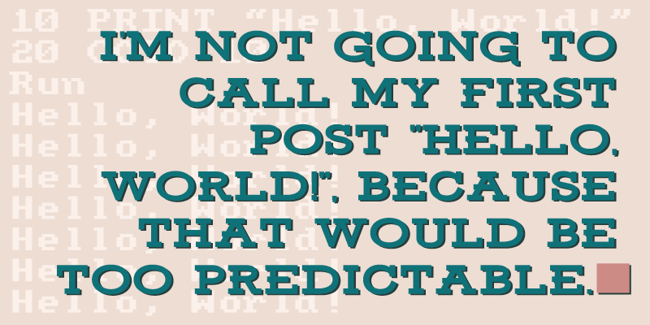

I'm excited to say that I've just been accepted for a place at Makers Academy, Europe's leading software development bootcamp. Soon I'll be leaving the safety of my full-time job to put myself through what I've been warned will be a very intensive three months of training, during which I'll learn to code well enough to be employable as a software developer.
I've been contemplating a career change for some time, and for a long while coding has been a strong consideration. I've used moderate amounts of code several times throughout my life, beginning as far back as using my first computer in 1990, when the only way to get a computer to do anything at all was to type your instructions in code. Since then I've pursued interests that have required some coding, including ‘indie' game development and some basic web development, but I've never invested enough time to improve my coding skills beyond the basics. Learning to code properly can take a long time when you have to juggle it alongside working full-time, having a family, and all of the other things that life can throw at you. It made sense to me that the best way to get good at coding as quickly as possible would be to throw myself completely in to an immersive course. I've been told by friends, family and colleagues that I'm taking a big risk in leaving my job without a guarantee of success, but personally I think it's riskier to languish in a job that isn't right, hoping that someday something will come along and improve your life for you. You don't achieve change by repeating the same steps over and over.
Fortunately Makers Academy has fantastic success with placing its students in to employment soon after the course ends, and that's largely because their process supposedly produces some very employable junior software developers. The course has been described as “Oxbridge meets the Royal Marines” – and with reportedly only one in ten applicants even passing the interview stages it's highly selective too. Makers Academy only selects the best applicants, and it turns them in to the best junior developers.
When Makers Academy was founded three years ago it was purely an on-site bootcamp, and I've been keeping an eye on them (and their competitors) ever since, but the cost has always been prohibitive. Thankfully this year Makers Academy has started offering a remote course, which allows for the same curriculum to be attended from home using video conferencing. I'm going to be one of these Remote students, which will keep costs affordable enough for me to be able to attend.
It seems that I might have finally discovered what I want to do when I grow up, and I'll be using this blog to track my progress, and to write about anything that I think might be interesting or useful to others.
Update (10.07.16)
When I attended Makers Academy the remote course was called ‘Ronin', but it's since been rebranded to ‘Remote'.